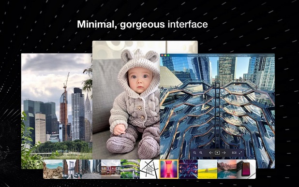

PreActivated | English Pixea Plus v4.0 macOS ImageTasks Pixea Plus full version standalone offline installer for macOS. It is an image viewer with an excellent minimal modern user interface. It works great with JPEG, HEIC, PSD, RAW, WEBP, PNG, GIF, and many other formats. Overview of Pixea Plus for macOS This is professional graphic design software. With its powerful tools, intuitive interface, and user-friendly features, this software is a must-have for any graphic designer, artist, or creative professional. Supported formats JPEG, HEIC, GIF, PNG, TIFF, Photoshop (PSD), BMP, Fax images, macOS and Windows icons, Radiance images, and Google's WebP. RAW formats: Leica DNG and RAW, Sony ARW, Olympus ORF, Minolta MRW, Nikon NEF, Fuji RAF, Canon CR2 and CRW, Hasselblad 3FR. Sketch files (preview only). ZIP-archives. Features of Pixea Plus for macOS: - Advanced vector design tools - User-friendly interface with customizable workspaces - Integrated support for Adobe Creative Suite - Real-time collaboration and shared design templates - Powerful raster and vector graphics engine What's New: - Built-in video player with MP4, MOV, A4V, FLV, AVI, WMV, MPEG, and MKV video formats support - New icons and other UI improvements - Share button - "Actual Size: pixel/points" setting - "Quit Pixea when the last window is closed" option - "Keep aspect ratio when resizing" option - Improved copy/paste functionality - Split view mode fix - Other bug fixes and improvements Operating Systems: - macOS 10.13 or later (x86/x64) Homepage: https://www.imagetasks.com/ Run predone setup, install & Enjoy, No activation required / Instruction is Included in the folder! AntiVirus Scanned Result for User-End >>> File: